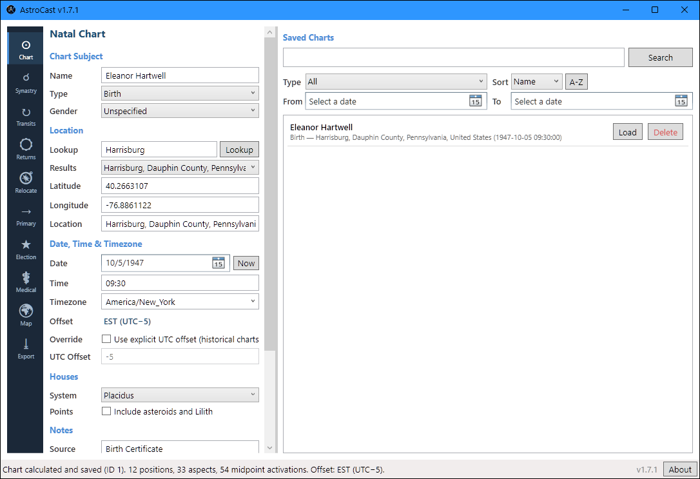

1. Cast your first chart
The example here is the one the User Guide uses: an invented person, Eleanor Hartwell, born 5 October 1947 at 9:30 in the morning in Harrisburg, Pennsylvania. Use your own details in its place.
- Open AstroCast. The Chart panel is showing, with the title Natal Chart.
- Type the name in Name. Leave Type at Birth.
- Type the birthplace in the Lookup box, for example
Harrisburg, PA, and press Lookup. Choose the right place from Results. The Latitude, Longitude, Location and Timezone boxes fill in. The lookup needs an internet connection. - Set the Date with the date picker. Type the time in Time on the 24-hour clock, for example
09:30. - Leave the house System at Placidus and Points unticked.
- Optional: in Source, record where the birth data came from, such as
Birth Certificate. The reports print it. - Press Calculate & Save. The status bar at the bottom reports the result.

2. Save the report
- Press Save Markdown. A file dialog opens, proposing a name such as
Eleanor_Hartwell.md. - Choose a folder and save.
That file is the chart report: a plain text file with headings and tables. You can open it in any text editor and read it as it is. It begins with the chart's header, then the planetary positions, the houses, the aspects and the rest.
Coming back to a chart. Find it in the Saved Charts list on the right of the window and press Load.
3. Get the prompt library
AstroCast calculates; it does not interpret. The written reading comes from an AI assistant, guided by a prompt: a long instruction written for one kind of report. The prompt library holds thirty of them.
- Download the prompt library from the download section of the AstroCast page. The installers do not carry the prompts.
- Unzip it anywhere. The prompts are in folders named for what they read.
- For a birth chart, open the
Natalfolder. P02 is a shorter reading and P01 is the full one. The guide's advice: start with P02 to see what a reading looks like, and use P01 when you want the whole picture.
For any other report, the Prompt Library Guide (PDF) has a table of every export and the prompt that reads it.
4. Ask for the reading
The prompts are written for Claude, ChatGPT and Copilot, and for any assistant that reads a long instruction and a pasted document.
- Open a new chat with your AI assistant. A new chat, not a continuing one: an earlier reading in the same chat colours the next.
- Open the prompt file in any text editor, select all, copy, and paste it into the chat.
- Open the report you saved, select all, copy, and paste it under the prompt.
- Type what you want. A sentence is enough, for example: Please read this chart for Eleanor Hartwell; she is the reader.
- Send it, and read what comes back.
The order matters. The prompt goes first, so the assistant knows what it is reading when the report arrives.
The prompts ask the assistant for a PDF. Some assistants produce one and others return the text; either is fine. Each prompt sets the length of the reading, and your request can change it: Use 1,500 words maximum is a line the prompts understand.
Three prompts are submitted a little differently (synastry, electional and horary), and the three medical prompts are for education and research only. The Prompt Library Guide explains both.
Reading the result
A reading is an interpretation, not fact. The prompts are written to keep apart what a chart suggests, what a person might do with it, and what is documented, and to say so.
To see what the two halves look like before you start, read the sample natal chart report and the reading made from it.